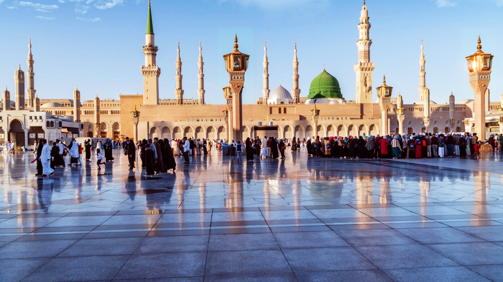
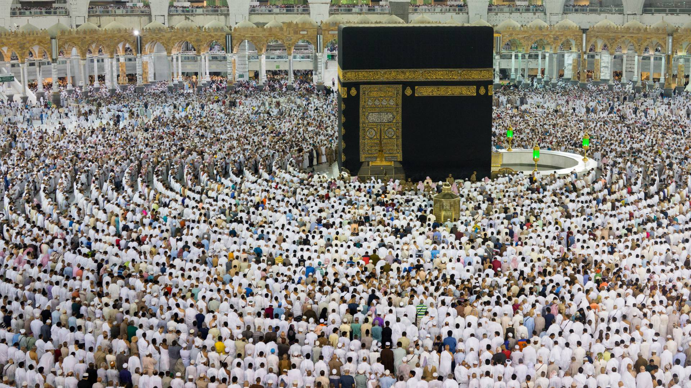

❮
❯
Embark on a spiritual odyssey with Get2Trip PVT. Ltd., where we are dedicated to making your Hajj experience not just a pilgrimage but a profoundly enriching and accessible journey. As you step into the sacred footsteps of millions, let us be your trusted companions in this transformative pilgrimage.
Expertise and Experience: With years of experience in organizing religious pilgrimages, we bring unparalleled expertise to ensure a seamless and spiritually enriching Hajj experience for our clients.
Personalized Packages: Recognizing that each pilgrim has unique preferences and requirements, we offer a range of customizable Hajj packages. From accommodation choices to transportation arrangements, our packages cater to diverse needs.
Accommodation at Proximity: We prioritize your convenience by selecting accommodations in close proximity to the holy sites in Mecca and Medina. This ensures that you can focus on your spiritual journey without worrying about logistical challenges.
Experienced Guides: Our experienced and knowledgeable guides are committed to providing insightful information and guidance throughout your pilgrimage. They are there to assist you in navigating the rituals and historical significance of the sacred sites.
Comfortable Transportation: Travel in comfort with our well-maintained and air-conditioned transportation services. We understand the significance of a hassle-free journey, and our vehicles are equipped to ensure a smooth pilgrimage experience.
Spiritual Guidance: Beyond logistics, our commitment extends to providing spiritual guidance. We organize sessions with knowledgeable scholars to enhance your understanding of the rituals and historical context of Hajj.
24/7 Support: Our dedicated support team is available round-the-clock to address any concerns or queries you may have before, during, or after your pilgrimage.
Embark on your spiritual journey with confidence, knowing that Get2Trip Pvt. Ltd. is devoted to making your Hajj experience memorable, meaningful, and stress-free. Contact us today to explore our Hajj packages and start your sacred pilgrimage with the assurance of a trusted travel partner.